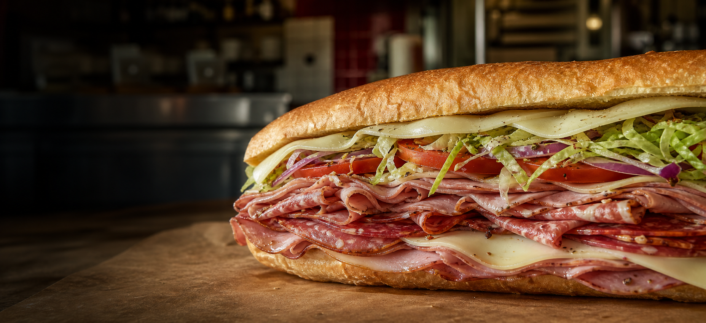

A
The deli
Famous overstuffed subs, Boar's Head provisions, a large variety of meats and cheeses, homemade salads, cannoli, and eclairs.
See popular subs
South Glens Falls' neighborhood deli & butcher since 2000.
Come hungry for an overstuffed sub, leave with dinner from the butcher counter.
No need to study a giant menu. Start with a Sorrentino Special, grab a homemade salad, then check the butcher case for dinner.
Famous overstuffed subs, Boar's Head provisions, a large variety of meats and cheeses, homemade salads, cannoli, and eclairs.
See popular subsAll-natural meat free of growth hormones and antibiotics, including steaks, chicken, ground beef, and 20 varieties of store-made sausage.
Explore the meat counterParty subs, deli platters, antipasto, hot entrees, salads, and desserts for office lunches, family gatherings, and celebrations.
Call to plan your orderBuilt to order with your choice of cheese, lettuce, tomato, onion, black olives, and pickles.
From a three-foot giant party sub to Italian-style platters and hot trays, Sorrentino's makes group orders easier.
Sorrentino's is the kind of local place where lunch, dinner, and the weekend grocery run can all happen at the same counter.
They have served South Glens Falls with friendly service, authentic Italian deli favorites, fresh produce, and a butcher case stocked with meat you can feel good about bringing home.